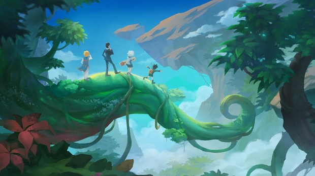
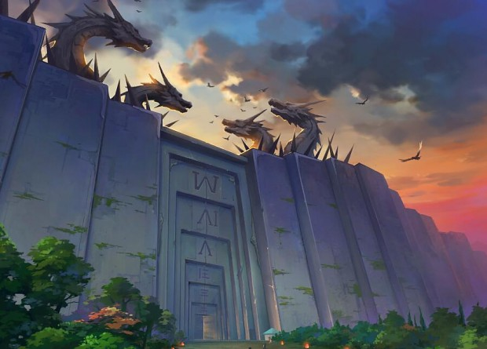
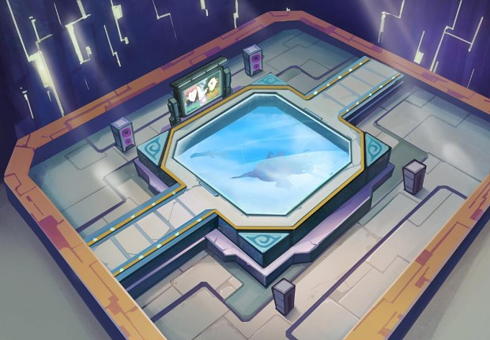
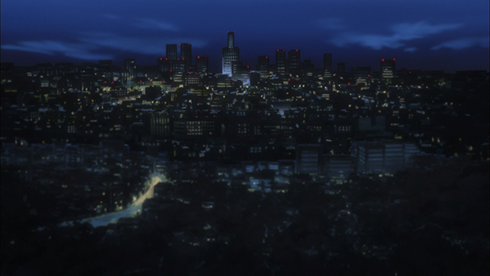
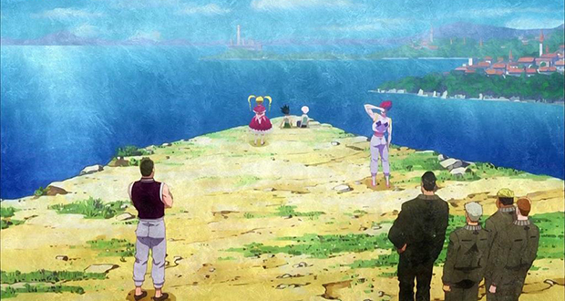
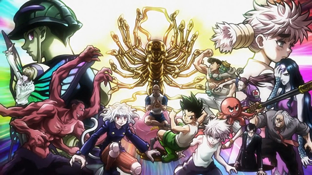
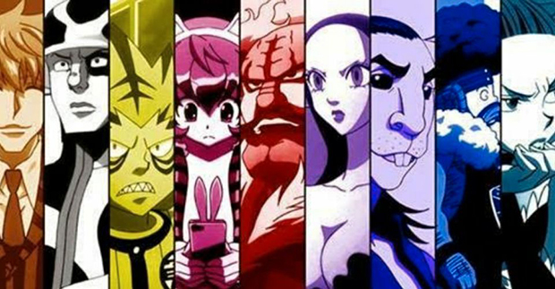

Story Arcs
Hunter Exam arc
The journey begins with Gon taking a series of bizarre tests to become a Hunter, which includes navigating a deadly jungle, hunting other applicants, killing a wild boar, an extraordinarily long underground marathon, and making sushi. During the Hunter Exam, Gon meets and befriends three of the applicants, Kurapika, Killua, and Leorio.
The series' first antagonist is also introduced as one of the applicants. Hisoka is a complex villain who uses playing cards as weapons and views Gon as an "unripe fruit" that he will take great pleasure in killing once he's grown up enough to present a challenge. Before the end of the Hunter Exam, Killua faces his brother, Illumi, who makes him come home before he can even finish the exam.
Zoldyck Family arc
After passing the Hunter Exam, Gon, Kurapika, and Leorio go off on a new adventure to spring Killua from his parents' mansion in Kukuroo Mountain. After the three reunite with Killua, Leorio leaves for medical school so he can become a professional doctor, and Kurapika leaves to find work as a bounty hunter. Gon and Killua decide to go together to Heavens Arena so they can gain combat experience by training.
Heavens Arena arc
Gon and Killua go to Heavens Arena, a 251-floor building where people compete through fighting tournaments around the clock for cash. It is here they meet the Kung-Fu master Wing, who teaches them about Nen, a chi-like energy that can be used to manifest superhuman powers. He teaches a young child named Zushi, who joins Gon and Killua to fight in the tournament to gain money and experience. Hisoka is also in the tournament. Gon finally gets to battle Hisoka again, to show off how much he has improved.
Yorknew City arc
The four main characters reunite for the world's largest auction in a sprawling metropolis named Yorknew City. Gon, Killua, and Leorio try different methods to make enough money to buy Greed Island, a JoyStation Console video game which could help Gon find his father.
Meanwhile, Kurapika works as a bodyguard for Neon Nostrade, a flesh collector and daughter to the head of a Mafia family, in order for him to get closer to his clan's Scarlet Eyes which are set to be auctioned in the same city. The Phantom Troupe, a group of thieves, who had slaughtered Kurapika's clan, are also gathering at Yorknew City.
Greed Island arc
Gon, Killua, and Leorio return to help Kurapika’s recovery after the battle against the Phantom Troupe. Leorio and Kurapika leave again, returning the focus to Gon and Killua. Gon and Killua are able to join a team hired by the billionaire, Battera, to play the game. Gon and Killua are joined and later Nen-trained by Biscuit Krueger, a 57-year-old woman who looks like a 12-year-old girl, and is a master and experienced teacher of Nen.
As the story progresses, a player nicknamed the Bomber is blowing other players up. Gon, Killua, and Biscuit team up with other players and take the Bomber out. The Phantom Troupe also travels to Greed Island, looking for a Nen-remover to remove the Nen blade on Chrollo Lucilfer, put by Kurapika to null his powers.
Chimera Ant arc
After leaving Greed Island, Gon and Killua meet up with Kite. They're all hired to investigate a strange insect leg that washed up on a beach. Genetic testing determines that the leg belongs to an abnormally large Chimera Ant Queen, which just happens to wash up on the shore of an island called the NGL (Neo-Green Life). The Chimera Ants proceed to wipe most of the population out and spawn hundreds of offspring for next generation before Gon, Killua, and Kite arrive to stop her.
13th Hunter Chairman Election arc
Netero, the Hunter chairman has passed away after his confrontation with the Chimera Ant King, Meruem. A new Hunter chairman is needed, so the Zodiacs are gathered to establish a new election for their new Hunter chairman. Ging Freecss, one of the Zodiac members is leading the establishment. Leorio returns and quickly rises to prominence as a top candidate in the election. These events act as a backdrop to the efforts of Killua and his servants, who wish to revive a hospitalized Gon using the Nen ability of Alluka Zoldyck. Illumi, aided by Hisoka, attempts to stop Killua due to the potential dangers attached to using Alluka's powers.
More story arcs coming on future website developments.